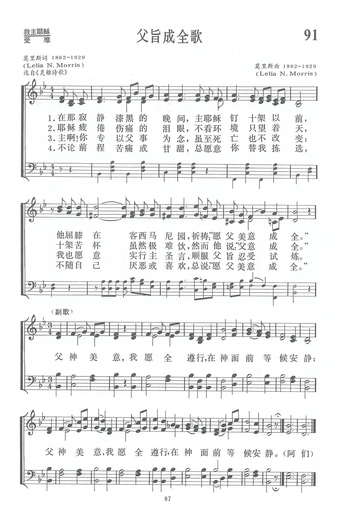

|
|
|
|
|
第091首《父旨成全歌》 |
|
https://www.zanmeishige.com/tab/13722.html?songbook=1&index=91
 |
|
|
|
|

| Short Name: | Mrs. C. H. Morris |
| Full Name: | Morris, C. H., Mrs. 1862-1929 |
| Birth Year: | 1862 |
| Death Year: | 1929 |
Lelia (Mrs. C.H.) Morris (1862-1929)

was born in Pennsville, Morgan County, Ohio. When her family moved to Malta on the Muskingum River she and her sister and mother had a millinery shop in McConnelsville. She and her husband Charles H. Morris were active in the Methodist Episcopal Church and at the camp meetings in Sebring and Mt. Vernon. She wrote hymns as she did her housework. Although she became blind at age 52 she continued to write hymns on a 28-foot long blackboard that her family had built for her. She is said to have written 1000 texts and many tunes including "Sweeter as the years go by."
Mary Louise VanDyke
第91首 父旨成全歌 THY WILL BE DONE _L．N.Morris
经文：“我父啊,倘若可行，求你叫这杯离开我；然而，不要照我的意思，只要照你的意思”(太26:39)。
《父旨成全歌》的词和曲都是美国一位热心女信徒莫里斯夫人(L．N.Morris，1862一1929)所作。她幼年时丧父，由母亲开着一爿杂货店维持生计，扶养她们姐妹二人长大。后来，她与莫里斯结婚。夫妇二人都是美以美会信徒，他们志同道合，非常爱主爱教会，积极参加教会各种聚会，并主领布道会、奋兴会、圣洁聚会、团契会、退修会等等；看望信徒从不问断。
莫里斯夫人还爱写圣诗和配曲，生平共写了一千多首，多半是热情奔放的福音颂歌。晚年虽然双目失明，但她仍很乐观，继续传道写诗。
《新编》内第91、215、234等三首词和曲是她的作。
这是一首描写耶穌被钉十架前独自在天父面前恳切祷告的受难诗歌。它的主题是《顺服父旨》，此情此景，四福音皆有记载。
这首诗如用于唱诗班，也像第9O首《耶稣独自祷告歌》那样，正歌可以女声二重唱，副歌男女声四重唱。